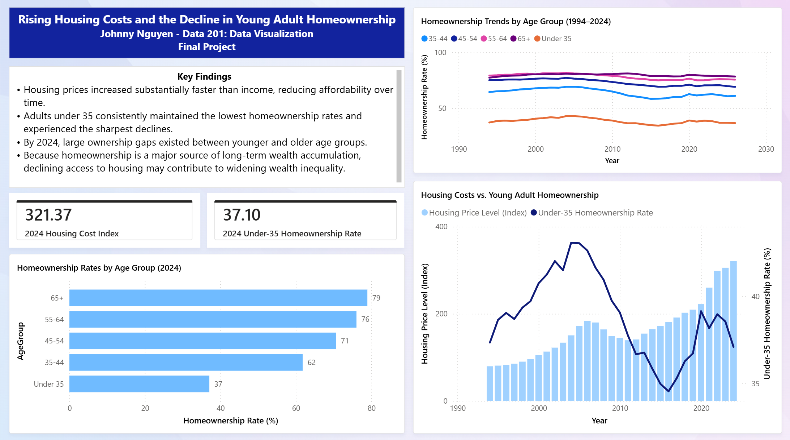
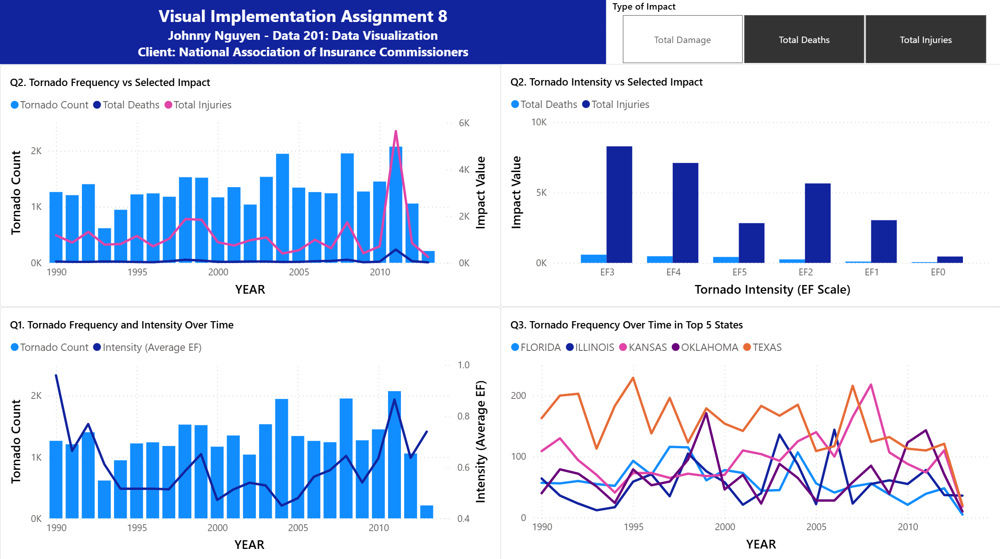
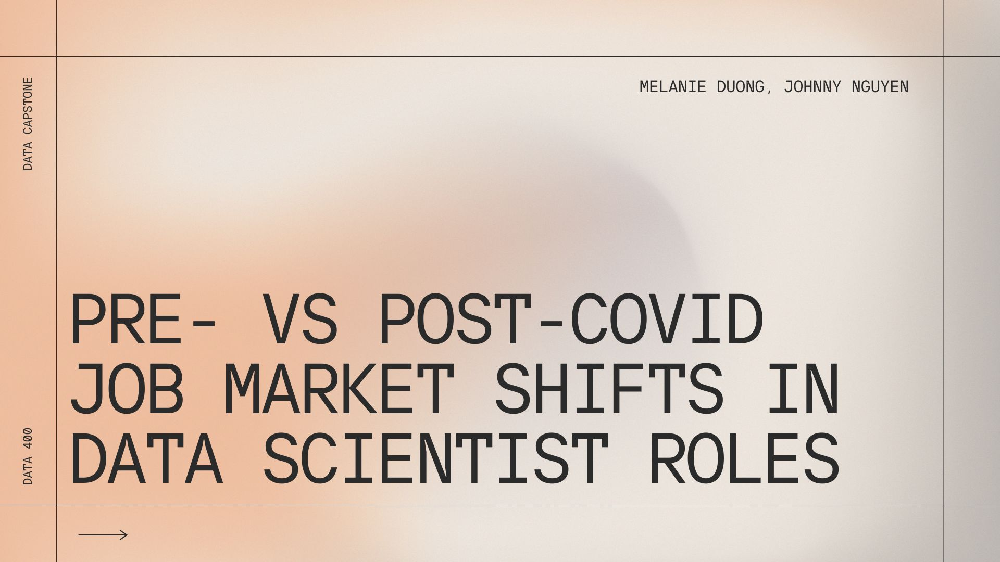

Personal Project 1
Personalized Workout Recommendation Using Machine Learning Classification Techniques
Personalized Workout Recommendation Using Machine Learning Classification Techniques

Rising Housing Costs and the Decline in Young Adult Homeownership

Tornado Impact Analysis Dashboard

Pre- vs Post-COVID Job Market Shifts in Data Scientist Roles